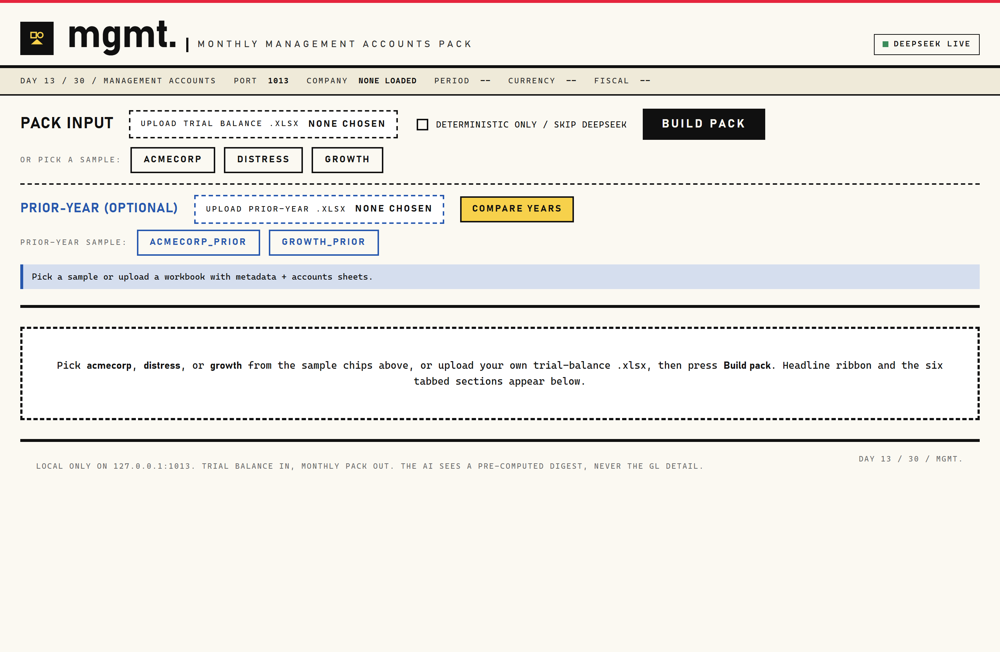
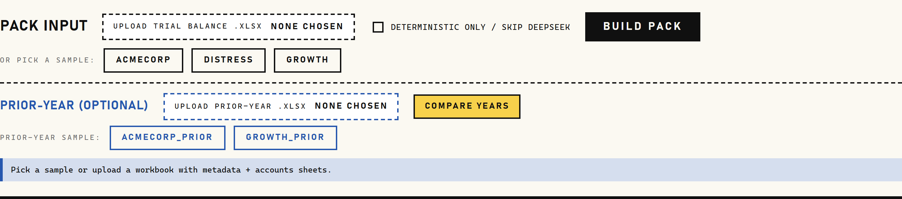
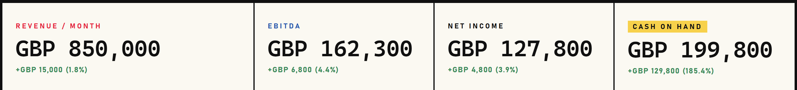
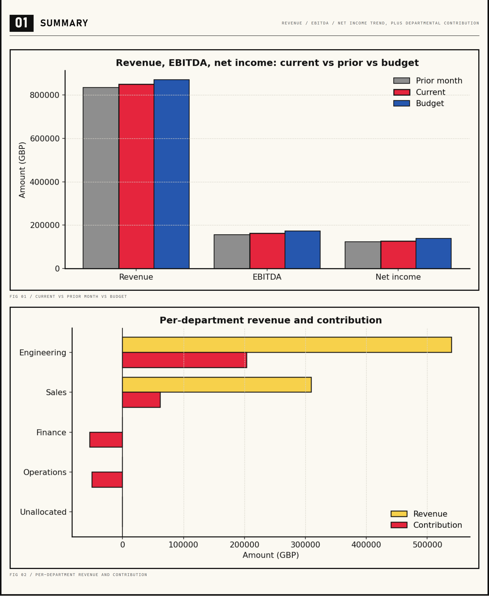

Take a trial balance, produce the three primary statements with YoY comparison and AI commentary.
Local-only Flask web app and CLI that turns a single trial-balance .xlsx into a full monthly management-accounts pack: P&L by department, balance sheet (with balance check), indirect cash-flow statement, KPI dashboard with RAG bands, and a CFO-voice narrative drafted by DeepSeek V4. The maths is deterministic and reproducible; the AI never touches a number, only annotates the digest.
DeepSeek writes the period commentary



